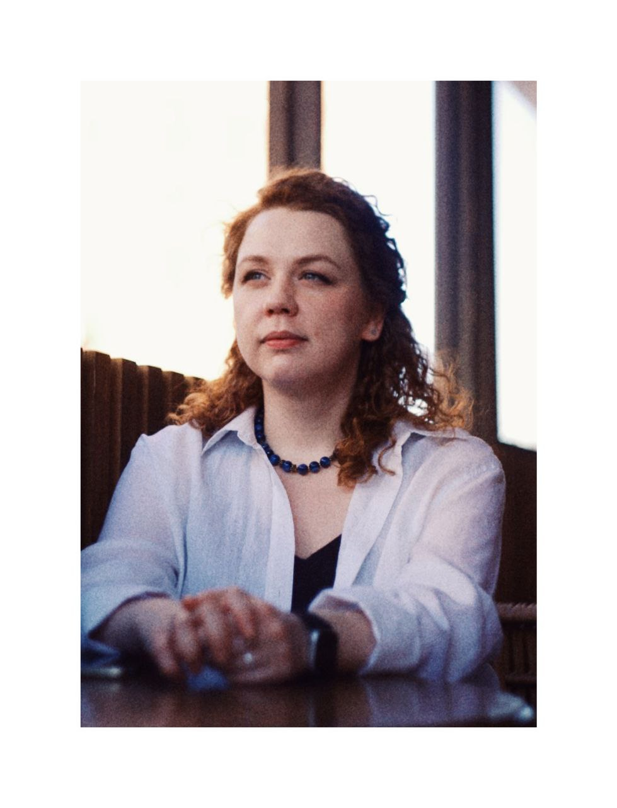

Анастасия Авдеева
Как связаться со мной
Откуда я
Хельсинки, Финляндия
Обо мне
Начинающий IT-специалист, стремящийся стать первоклассным фулстек-разработчиком.
Мои качества
Профессиональные навыки
- Программирование на Python
- Программирование на Java
- Основы SQL и дизайна баз данных
- Git и GitHub
- Работа с командной строкой UNIX
Личные качества
- Пунктуальность
- Умение работать самостоятельно и в команде
- Внимательность к деталям и системность
- Инициативность
- Коммуникабельность
Что я люблю
- Изучать новые технологии и развивать личные качества
- Знакомиться с новыми людьми
- Путешествовать
- Исторический нон-фикшн и классическую литературу
Знание языков
- Английский (профессиональный уровень)
- Финский (начальный уровень)
 +358408749647
+358408749647